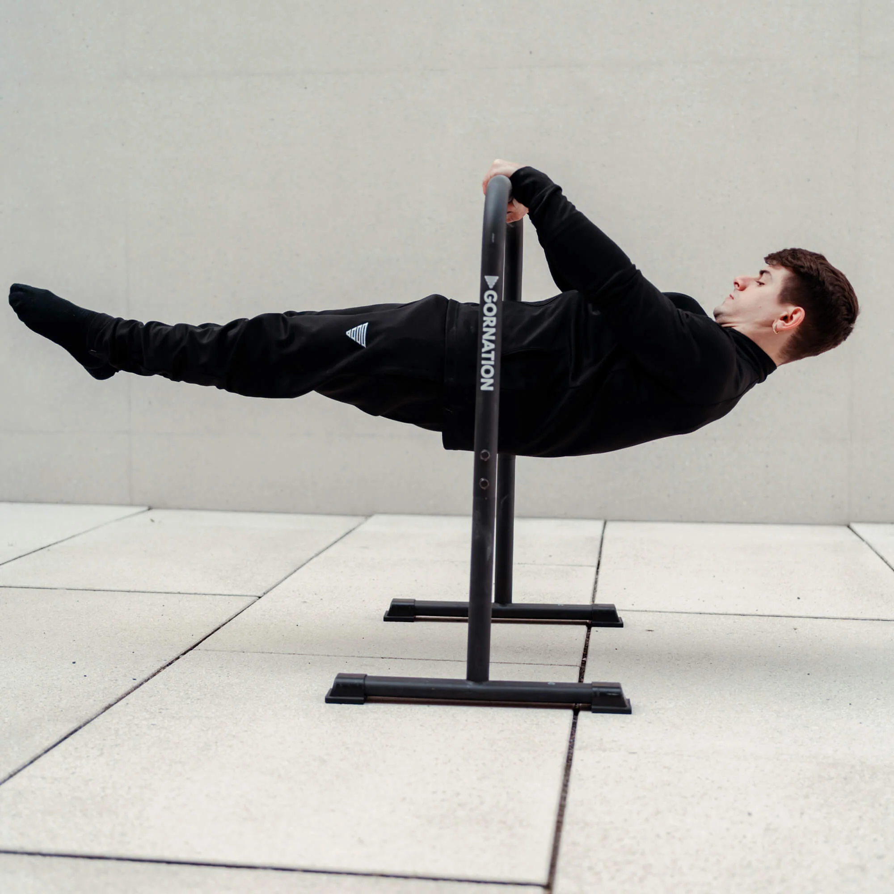
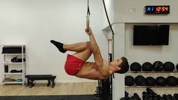
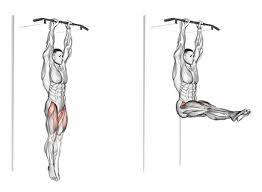
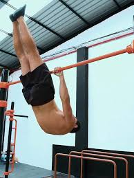
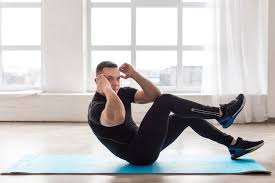

Gerakan front lever pemula
Untuk pemula yang ingin belajar handstand, ada beberapa gerakan dan latihan pendukung yang dapat membantu membangun kekuatan dan keseimbangan. Berikut adalah beberapa gerakan yang bisa kamu coba :
1. Hanging (Gantung) :

- Cara: Gantung di palang dengan tangan sedikit lebih lebar dari bahu. Tahan posisi ini selama mungkin untuk membangun kekuatan dasar di lengan dan bahu.
- Manfaat: Membangun kekuatan grip dan otot bahu.

- Cara: Dari posisi menggantung, tarik lutut ke dada dan jaga posisi tubuh tetap horizontal. Tahan selama mungkin.
- Manfaat: Meningkatkan kekuatan inti dan punggung, serta mempersiapkan untuk front lever penuh.

- Cara: Gantung di palang, angkat kaki ke atas hingga sejajar dengan tubuh (atau lebih tinggi). Jaga agar tubuh tetap stabil.
- Manfaat: Menguatkan otot perut dan punggung bawah.

- Cara: Mulai dari posisi front lever (jika sudah bisa), kemudian turunkan tubuh perlahan sambil menjaga kontrol.
- Manfaat: Melatih otot untuk mengontrol gerakan saat turun.
STORY BOOK

Story Book Pull Up
Berisi Panduan latihan Pull Up Set berdasarkan Pengalaman

Story Book Dips & Push Up
Berisi Panduan latihan Dips & Push Up Set berdasarkan Pengalaman

Story Book Muscle Up
Berisi Panduan latihan Muscle Up berdasarkan Pengalaman
Story Book Handstand
Berisi Panduan latihan Handstand berdasarkan Pengalaman
Story Book Front Lever
Berisi Panduan latihan Front Lever berdasarkan Pengalaman
Story Book Planche
Berisi Panduan latihan Planche berdasarkan Pengalaman